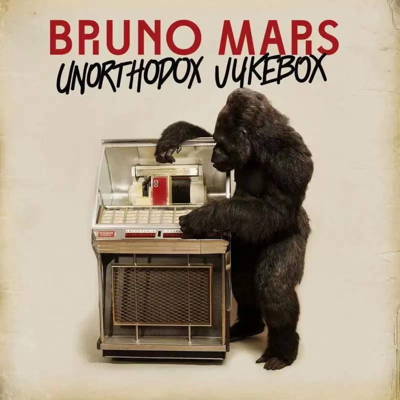

Lyric
Written by：Bruno Mars/Philip Lawrence/Ari Levine/Andrew Wyatt
Same bed but it feels just a little bit bigger now
Our song on the radio but it don't sound the same
When our friends talk about you
All it does is just tear me down
'Cause my heart breaks a little when I hear your name
And it all just sounds like uh uh uh
Hmmm too young too dumb to realize
That I should have bought you flowers and held your hand
Should have gave you all my hours when I had the chance
Take you to every party
'Cause all you wanted to do was dance
Now my baby is dancing
But she's dancing with another man
My pride my ego my needs and my selfish ways
'Caused a good strong woman like you to walk out my life
Now I'll never never get to clean up the mess I made
And it haunts me every time I close my eyes
It all just sounds like uh uh uh uh
Too young too dumb to realize
That I should have bought you flowers and held your hand
Should have gave all my hours when I had the chance
Take you to every party
Cause all you wanted to do was dance
Now my baby is dancing
But she's dancing with another man
Although it hurts I'll be the first to say that I was wrong
Oh I know I'm probably much too late
To try and apologize for my mistakes
But I just want you to know
I hope he buys you flowers I hope he holds your hand
Give you all his hours when he has the chance
Take you to every party
'Cause I remember how much you loved to dance
Do all the things I should have done when I was your man
Do all the things I should have done when I was your man
When I was your man
Singer: Bruno Mars publish time: 2012-01-01
language：English Album：When I Was You Man